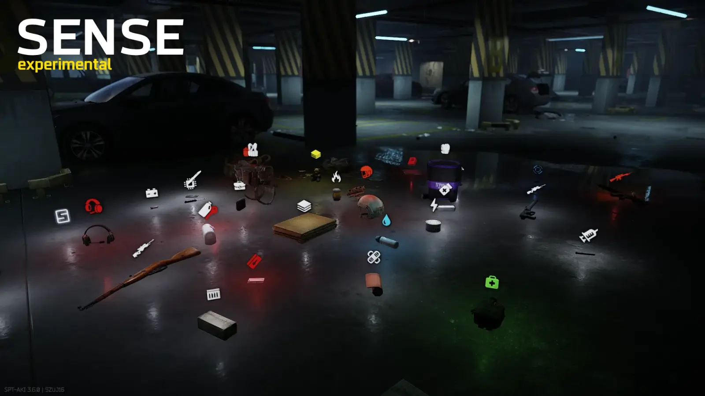
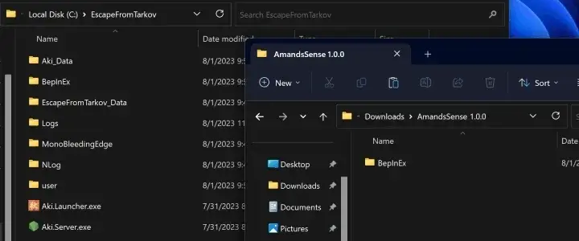

Amands' Sense
- Downloads
- 49,659
- Favourites
- 1
Experimental Amands’ Sense
This mod shows interactable icons in range such as Loot, Containers, and Dead Bodies with additional icons for Kappa Items or Wishlist Items.

Activate Sense key is Double Click F by default.
Colors, Audio, Keybind, Cooldown, Speed, Duration and Radius can be changed by pressing F12
(click somewhere else to leave).
Installation

SPT-AKI 3.6.X (25206) ONLY
0.0.9 for 3.5.8 can be found on Github
Planned Features
Icons for Unlockable Doors, Quest Items, Extract Location.
Final Icons design.
Known Issues
Thanks to CWX, SamSWAT for their mods helping me on modding in general.
KMYUHKYUK’s Grenade Sprite for the sprite loading used on this mod.
thanks pin for beta testing.
Version
1.1.0
SPT-AKI 3.7.1 (26535), 3.7.0 (26282)
Extract the .zip and move the BepInEx folder to your main SPT directory, 7zip recommended.
NEW! Smol things
Experimental Sense Always On, Disabled by Default.
Quest items Ex. Jaeger’s encrypted message
Deadbody separate Radius
FIXED! Smol problems
BepInEx Console Errors
In raid Console Errors